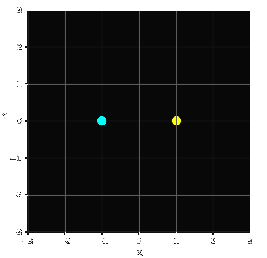

Initially intended as an exploration into game development and related concepts,
this quickly evolved into a passion-driven project of mine.
Grasping the concept of camera projection proved challenging at first. Imagine you have a virtual world within a cube, where for each axis of this world is the maximum floating-point value that a computer can represent, now imagine you want to set up a view point and look through this world.
| flattened world |
|---|
|  |